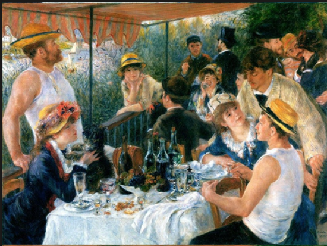

Querying • Joins • Data Cleaning • Analytical Reporting
Collection of SQL projects covering complex querying, joins, aggregations, data cleaning, and analytical reporting.

Exploratory data analysis using complex SQL queries to uncover insights about famous artworks, artists, museums, and sizing patterns.
View ProjectFinancial data analysis utilizing SQL window functions, moving averages, and trend evaluations over historical stock performance.
View ProjectGlobal epidemiological data exploration using SQL to calculate infection rates, death percentages, and vaccination progress by country.
View Project